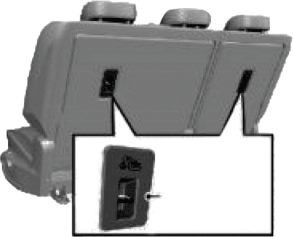

- Do not use blower or infotainment system in engine off mode.
- Ensure door, hood and tail gate are properly locked.
- Shift to P before switching off ignition.
- Please do not use Accelerator & Brake pedal simultaneously.
- Prohibited to drive the vehicle in flood / high water level conditions.


- Water in the footwell after a rainstorm with the sunroof open.
- Vehicle partially submerged in water up to 300 mm.
- Leakage of liquids in the trunk. In these situations, there is no risk of electric shock. However, there is a possibility of other damage to the vehicle.
Do not alter the charging port or equipment. Doing so could lead to charging problems or even cause a fire or may lead to fatal injuries.
Do not dismantle or open the lithium-ion HV battery pack without authorization. In case of accidents, professionals should not cut or impact the battery pack to avoid leaks, deformation, and potential injury
- EV - Electric Vehicle
- HV battery - High Voltage battery
- LV battery - Low Voltage (12V) battery
- AC - Alternating Current
- DC - Direct Current
- OBC - On Board Charger
- PDU - Power Distribution Unit
- VCU - Vehicle Control Unit
- BMS - Battery Management System
- OBD - On Board Diagnostics
- SoC - State of Charge
- SRS - Supplementary Restraint System
- CRS - Child Restraint System
- DAB - Driver Airbag
- PAB - Passenger Airbag
- ABS - Anti-lock Braking System
- EBD - Electronic Brake Force Distribution
- ESC - Electronic Stability Control
- PEPS - Passive Entry/Passive Start
- ESCL - Electronic Column Steering Lock
- EPAS - Electric Power Assisted Steering
- LED - Light Emitting Diode
- DRL - Daytime Running Lamp
- ORVM - Outer Rear View Mirror
- IRVM - Inside Rear View Mirror
- AUTO-IRVM - Auto Inside Rear View Mirror
- HVAC - Heating Ventilation and Air Conditioning
- FATC - Fully Automatic Temperature Control
- DIS - Driver Information System
- DTE - Distance to Empty
- IGN - Ignition
- ACC - Accessory
- EPB - Electronic Parking Brake (EPB)
- CPL - Centre Positioning Light
- Set up mobile devices (e.g., phones, navigation units) only when your vehicle is parked or stopped.
- Use mobile devices only when permitted by laws and when it is safe. Never text or email while driving; many places have laws against texting and some also ban handheld phone use.
- Do not let mobile device use distract you from driving. It's your responsibility to ensure that both hands remain on the wheel and your attention stays on the road.

When you sit on the seat, make your hip as close to the backrest as possible. Adjust the distance between the seat and the pedal to make your leg slightly bend when you press the pedal. The passenger’s seat shall slide as backward as possible
Make your shoulders lean on the backrest as backward as possible. Set the backrest inclination angle to make your arm conveniently to reach the steering wheel while slightly bending the arm. Keep the shoulders leaning against the backrest while turning the steering wheel. The backrest shall not incline excessively backward. We suggest that the inclination angle of all backrests shall not be more than 25 degrees.
- NEVER adjust the seat while the vehicle is moving. Unexpected movements could lead to losing control of the vehicle and causing an accident.
- Avoid placing anything under the front seats. Loose objects in the driver's foot area might interfere with the foot pedals and cause an accident.
- Ensure nothing interferes with the seatback's normal position and proper locking.
- Do not place a cigarette lighter on the floor or seat. Operating the seat could cause gas to escape from the lighter and start a fire.
- Be careful when retrieving small objects trapped under the seats or between the seat and the center console. Sharp edges of the seat mechanism could cut or injure your hands.
- If there are rear seat passengers, adjust the front seat position carefully.
- After adjusting the seat, always ensure it is securely locked in place. If it's not locked properly, the seat could unexpectedly move and cause an accident.
The power seats can be moved even when the vehicle is turned off.
To avoid damaging the seats:- Always stop adjusting the seats once they've been moved as far forward or backward as they can go
- Avoid adjusting the seats for longer than needed when the vehicle is turned o to prevent unnecessary battery drain.
- Do not try to operate two or more seats simultaneously as this could cause an electrical problem.
- Don't try to adjust your seat while you're wearing your seat belt. Moving the seat cushion forward could put strong pressure on your stomach.
- Be careful not to let your hands or fingers get caught in the seat mechanisms while the seat is moving.
- Never leave children alone in the vehicle.

Electric adjustment type*
As shown in the figure, the electric adjustment switch is on the outer side of the seat. Push the switch forward or backward, and the seat will move forward or backward accordingly. Release the switch when it reaches a proper position.

To adjust the seat forward or backward, pull upward the adjustment lever on the front lower part of the seat to adjust the seat forward or backward, and release the lever after the seat is adjusted to a proper position.
Try to slide the seat forward and backward to ensure that the seat is locked at a proper position.

Electric adjustment type*
As shown in the figure, turn the adjustment switch forward and backward, and the backrest will be folded forward or unfolded backward depending on the vehicle configuration. Release the switch when it is adjusted to a proper position.

Manual adjustment type*
Pull up the handle near the seat cushion; adjust the backrest inclination angle to a proper position; then, release the handle
After adjusting the seat backrest, try to shake the backrest to ensure that the backrest is locked.
Reclining the seatback: Sitting in a reclined position while the vehicle is moving can be dangerous. Even if you're wearing your seat belt, reclining the seatback reduces the eectiveness of your seat belt and airbags.
Never recline the seatback while the vehicle is in motion. Riding with a reclined seatback increases the risk of serious or fatal injuries in a crash or sudden stop. Drivers and passengers should always sit upright in their seats, properly restrained, with the seatbacks upright.
Seat belts need to fit tightly across your hips and chest to work correctly. When the seatback is reclined, the shoulder belt cannot properly secure your chest-it may sit in front of you instead. In an accident, this could cause you to be thrown into the seat belt, potentially causing neck or other injuries.
The more the seatback is reclined, the higher the risk that the passenger's hips could slide under the lap belt or the passenger's neck could hit the shoulder belt.
d. Seat height adjustment
Electric adjustment*
As shown in the figure, rotate the height adjustment switch on the outer side of the seat cushion, and then release the switch after the seat is adjusted to proper height.
Manual adjustment*
Turn the handle on the outer side ofthe seat upward and downward untilthe seat is adjusted to the desiredheight. While adjusting the seatheight, the seat must be loaded.
Therefore, please sit on the seat before adjustment; otherwise the adjustment device may be damaged.
- When you're putting the rear seatback back up from being folded, hold it and move it slowly. Make sure it locks into place by pushing down on the top of the seatback. If it's not locked during a sudden stop or accident, things in the back could move forward very fast and hurt people inside the car.
- When folding the seatback, gently press against it or the headrest to control how fast it folds. If you don't press, it might fold down suddenly and hurt someone when you pull the lever.
Do not allow your hands or fingers to get caught in the seat mechanisms whilst adjusting the seats
To keep the vehicle safe:
Before you fold the seatback, put the seat belt buckle in the holder between the seatback and cushion. Also, guide the seat belt strap into its place to protect it from getting damaged.

a. Backrest adjustment and folding
To adjust the seat forward or backward:
- Lift and hold the seat adjustment lever up.
- Slide the seat to where you want it.
- Let go of the lever and check that the seat is securely locked in position.
Do not put any article or luggage higher than the rear seat on the seat. No one is allowed to sit on a seat with backrest folded when the vehicle is running.
The area for passenger is separated from the area for luggage. In an emergency brake or other accident, the unfixed luggage or the passenger sitting on a seat with backrest folded may be thrown out from the vehicle. This may result in serious personal injury or even death.
Ensure that each seat is locked before driving.
Do not operate the seat release handle when the vehicle is running. Otherwise, the passenger may be injured.
b. Adjust the seatback angle
The seat backrest angle state is 25 degrees backward in the vertical state.
- Pull up the seatback recline lever.
- Hold the lever and move the seatback to your preferred position.
- Release the lever and ensure the seatback is securely locked in place. The lever should return to its original position for the seatback to be locked.
You can fold the seatbacks using You can fold down the rear seats to make it easier to carry long items or to create more space for luggage in the vehicle.
Never let anyone sit on a folded seatback while the vehicle is moving. It's not safe because there are no seat belts there. In an accident or sudden stop, this could cause serious injury or death.
Items on a folded seatback should not stick up higher than the front seats. If they do, they might slide forward and hurt someone or cause damage if there's a sudden stop.
To stay safe in case of an accident, follow these steps when adjusting your headrests:
- Adjust the headrests correctly for all passengers before driving.
- Never allow anyone to sit in a seat without a headrest or with the headrest turned around.

Head rest height adjustment
To adjust the headrest upward, pull the headrest upward to a proper position and fix it. To remove the headrest, press and hold the release switch. To adjust the headrest downward, press and hold the release switch and push the headrest downward to a proper position, release the release switch for fixation. Do not press the headrest forcibly to avoid injuring the finger on the release switch.
In case of accidents, seat belts can provide good protection and that they must be used during driving is stipulated by regulations.
The seat belt is primarily designed for adult body sizes and is suitable for passengers with a height greater than 150 centimeters or a weight exceeding 36 kilograms. For children under 12 years old, please choose an appropriate child restraint system based on the child's size.
Please check all parts of the seat belt system for any wear or damage or abnormal function regularly. Please replace the damaged parts and components. It is strongly recommended to have the seat belt or deployed seat belt tensioner replaced at the JSW MG authorised service center after an accident.
Improper operation (for example removal or installation of seat belt or seat belt anchor buckle) will trigger the seat belt tensioner, leading to injury risks.
All passengers shall always fasten their seat belts before driving, and must wear seat belts under any circumstances during driving. In the event of an accident, passengers who do not wear or do not wear seat belts correctly may suer serious injuries or deaths.
- The seat belt shall not be buckled against a hard or fragile object in your pocket. Otherwise, the hard object will hurt you and the fragile object may be damaged in case of emergencies.
- Each seat belt can only be used by one person. Do not allow multiple occupants (including children) to share one seat belt.
- Do not allow a child to sit on the passenger's lap, which cannot be fully protected.
- If the seat backrest is tilting backwards too much when the seat belt is used, the protection eect will be reduced greatly when the accident occurs.
- Do not replace, disassemble, assemble or modify the seat belt without permit. It is not allowed to add any accessory or other object that may interference with the operation of the seat belt.
- Keep the seat belt retracted and unlocked when it is not used for a long time. Do not allow any seat belt or its buckle or tongue to be clamped by a door; otherwise, the seat belt may be damaged.
- The seat belt adapts to the human body through the emergency locking retractor. It will tighten automatically and naturally fit the body after locking. Please contact the JSW MG authorised service center for inspection if it is too tight.
- The seat belt must be kept clean. Rough dirt will hinder the function of the automatic retracting device of the seat belt. It can be wiped with a wet cloth without removal or replacement. Pay attention to prevent foreign matters from getting in the seat belt buckle (such as sunflower seed shell and button); otherwise the seat belt buckle will fail.


- Pull out the seat belt from the retractor and guide it around the body without twisting. The shoulder belt shall span the whole shoulder obliquely, but shall not touch the neck or slip from the shoulder. The lap belt shall span the hip as low as possible.
- Inserting the latch plate forward (reverse insertion of the latch plate will cause the seat belt to twist, and cut or even endanger life in case of collision). Insert it into the buckle of the seat pair until a "click" locking sound is heard, and then pull it to check whether the locking is reliable. Pull the shoulder belt forcibly to adjust the tightness degree of crotch strap. The occupants can move in a small range when the vehicle stably runs, and the seat belt can be pulled out or retracted with the slow movement of the occupants.
Loose or heavy clothing will hamper close wearing the seat belt. Do not place any object (such as handbag and mobile phone) between the seat belt and your body.

If you need to release the seat belt, press the red button on the buckle, and the tongue will automatically pop up and the seat belt automatically will retract. The seat belt is locked due to retracting or pulling out too fast, and it can be smoothly pulled out by loosening the webbing.

The seat belt provides protection for everybody, including a pregnant woman. Like all passengers, if pregnant women do not wear the seat belt, severe personal injuries are more likely to be caused to them. The pregnant woman shall wear the hip/shoulder seat belt during the whole pregnancy, and the hip belt shall be fastened as low as possible. The best way to protect a fetus is to provide safety protection to its mother. If the seat belt is fastened correctly, the fetus is not vulnerable to injury in case of a collision. For a pregnant woman or any person, correct wearing is the key to exerting the best protection eect of the seat belt.
- A young child shall always use the child seat. Never hold a baby in your arms while riding in the vehicle. Never allow a child to stand or kneel on a seat or in the luggage compartment when the vehicle is running.
- An unfixed child seat may be thrown out of the vehicle in case of a collision or emergency stop, causing personal injuries to the driver and passengers. Be sure to properly secure the child seat even when it is not in use.
- f the child seat is put in a closed compartment in hot weather, its temperature will be very high. Make sure that the child seat temperature is not very high before putting a child in the seat. If the child is too small and the seat belt cannot provide the best protection for him/her, please make sure that a proper child seat is used to provide safety protection.
- The size and configuration range of the child seat is very wide. Not all child seats are applicable to your vehicle due to the interior trim as well as the seat shape and size. You have responsibility to ensure that the child seat installed matches with your vehicle and that the seat can be connected correctly to the vehicle with its anchor system. If the child seat does not match with your vehicle size and the child body figure or the connection to your vehicle is incorrect, severe personal injuries will be caused to the child and other passengers in the vehicle in case of a collision.

According to GB27887-2011, the child restraint system can be classified into 5 groups below:
- Group 0: for children weighing less than 10 kg
- Group 0+: for children weighing less than 13 kg.
- Group I: for child weighting more than 9 kg and less than 18 kg.
- Group II: for child weighting more than 15 kg and less than 25 kg.
- Group III: for child weighting more than 22 kg and less than 36 kg. Please select a suitable child seat according to the child weight and body figure.
For infants under one year old, their bones are very fragile, and a backward-facing child seat shall be used.
| Quality Group | Seat (or Other | Positions) |
|---|---|---|
| Front passenger | Left/Right rear seat | |
| Group 0: < 10kg | X | U |
| Group 0+: < 13kg | X | U |
| Group I: 9kg~18kg | X | U |
| Group II: 15kg~25kg | X | U |
| Group III: 22kg~36kg | X | U |
Note: Meanings of letters in the table are as follows:
U - applicable to universal child restraint system certified under this mass group
UF - Applicable to the forward-facing universal child restraint system approved by this quality group
L - applicable to special child restraint systems included in the list. Such restraint systems maybe for special, restricted or semi-general vehicles
B - applicable to built-in child restraint system approved for this mass group.
X - The seat is not suitable for child restraint systems under this mass group.

There is a set of fixing device on each of the right and left sides of the second row seat.
To fix the child seat:
- The lower anchorage of child seat fixing device is on the joint between the rear row left and right seat backrest and the seat cushion back. Its position can be identified through the label on the lower edge of the backrest.
- Clear up the objects on the seat. Note to remove the seat belt and seat belt buckle to avoid aecting accurate fixing of the child seat
- Put the child seat on the second row seat.
- ① : Child seat clamp, ② lower fixing point; connect the fixed hook on the child seat with the vehicle's fixed device.
- Connect the upper strap of the child seat to the corresponding fixing point of the vehicle. Refer to the child seat instructions to get to know when and how to strain the upper strap. As shown, the upper anchorage of child seat fixing device is located behind the rear seat backrest.
- Push and pull the child seat in all directions to make sure it is safely secured.
- Make sure that the child seat temperature is not very high before putting a child in the seat.
a. Airbag layout

- Driver frontal airbag.
- Front passenger frontal air bag.
- Front side airbag. (If equipped) Side
- Roof rail airbags (If equipped)
For all airbags, the letter "AIRBAG" is marked on the trim panel or the label near the opening where they are deployed. For frontal air bags, the letter "AIRBAG" for the driver is located in the middle of the steering wheel, and that for the front passenger is located on the instrument panel. For lateral-impact air bags, the letter "AIRBAG" is located on the backrest side, near to the door. The letter "AIRBAG" for side curtain airbag is located on the roof lining or trim panel.
b. Safety precautions & warnings
The cars have air bags for the driver and front passenger seats. These air bags help the seat belts protect you.
Always wear seat belts and use Child Restraint Systems on every trip. Even with air bags, you can get seriously hurt or killed in a crash if you're not properly belted or wearing your seat belt when the air bag inflates. An inflating air bag could hit the child and cause serious or fatal injuries. ABC - Always Buckle Children under age 13 in the back seat. It's the safest place for kids of any age. If a child age 13 or older must sit in the front seat, make sure they're properly belted and move the seat as far back as it can go. All passengers should sit upright with their seat belt on, feet on the floor, until the vehicle is parked and turned o. If someone isn't in the right position during a crash, the air bag could hit them hard and cause serious injuries.
You and your passengers should avoid sitting too close to air bags or leaning against the door or centre console.
Move your seat back as far as possible from front air bags while still being able to control the vehicle.
a. Airbag position & marking:

As shown in the Figure A above, the driver frontal airbag is located in the middle of the steering wheel.
As shown in the Figure B above, the front passenger frontal airbag is located in the passenger's side instrument panel.


As shown in the Figure C, the front seat side airbag is installed on the backrest side near to the door.
As shown in the Figure D, the side curtain airbag is installed at the side wall and roof joint, on the roof lining.
1. Hitting the shoulder, edge of pavement or hard surface

2. Fall into or drive into a deep pit/ Wheel hard landing or vehicle fall

b. Frontal Airbag non-deplyoment
The frontal airbag is generally not inflated in the event of a side collision, rear-end collision, rollover or low-speed frontal collision. No matter what kind of collision, only when the vehicle generates suicient forward deceleration, will the frontal airbag be inflated.
1. Head-on collision angle over 30° from vehicle longitudinal direction

2. Overturn, falling from high place, rolling

3. Hit deformable objects, such as sandpile, guard bar, column and tree

4. Hit into front vehicle bottom, especially truck bottom

c. Side airbag / curtain airbag nondeployment
The side airbag / side curtain airbag system may not be inflated if the vehicle suers a lateral collision at a certain angle or if the side of the non-occupant compartment is hit.
1. Vehicle body side (not passenger compartment) collision

2. O-vertical side collision
The side airbags/curtain airbag do not normally inflate in the event of a frontal collision, rear-end collision, rollover or low-speed side impact.
3. Frontal collision
4. Rear-end collision

5. Overturn, falling from high place, rolling

6. Side collision to truck during drifting


On the instrument panel, there is an airbag indicator which displays the airbag shape symbol. The system will check whether the airbag circuit system has a fault and give corresponding prompt through the indicator. The indicator will light up in case of airbag system fault. It must be inspected and repaired as soon as possible.
When shall the airbag be inflated? The frontal airbag is designed to be inflated in moderate to severe headon collision or almost head-on collision to reduce severe injury risks ofthe driver's and the front passenger's head and chest.
The frontal airbag is designed to be inflated in moderate to severe headon collision or almost head-on collision to reduce severe injury risks ofthe driver's and the front passenger's head and chest. Frontal airbag inflation is not primarily dependent on the speed of the vehicle, but on the object being collided with, the direction of the collision and the deceleration of the vehicle per unit time during the collision. The frontal airbag may be inflated at dierent collision speed. It depends on whether the vehicle hits the object straight or at an angle at the moment of the collision, and on whether the collided object is fixed or moving, non- deformable or deformable, narrow or wide. Due to dierent designs of each model, the collision inflation conditions of the frontal airbag may vary. Frontal airbags do not inflate in the event of a vehicle rollover, a rear collision and many side collisions. The frontal airbag may not inflate in slight headon or nearly head-on collisions, lateral or diagonal collisions, collisions to cylindrical objects (such as telegraph pole and tree trunk), rear-end collisions under large vehicle (trucks, etc.) breast board and lateral glancing collisions. As per the design, the seat lateralimpact airbag and the side curtain airbag will inflate according to the impact position in case of the moderate to severe lateral collisions. The seat lateral-impact airbag and the side curtain airbag may not inflate in slight side collisions and lateral-frontal or diagonal collisions. As per the design, the seat lateralimpact airbag and the side curtain airbag will inflate on the collision side of the vehicle. Airbags are not triggered in every collision. For a particular accident, it shall not simply judge whether the airbag should be inflated according to the causalities, vehicle damage or repair and maintenance expenses. Your vehicle is equipped with a collision sensing and diagnosis module. If a collision accident reaches certain strength, the module may record relevant collision information after the collision. If you have any questions about the airbag working condition of your vehicle in a collision accident, please contact the JSW MG authorised service center in time for professional analysis and diagnosis
How is the airbag inflated? During inflation, the sensing system sends an electronic signal that triggers the gas generator to release gas to fill the airbag, causing the airbag to inflate and eject from the cover. The gas generator, airbag and relevant members are all components of the airbag module. Please refer to "Airbag Position" for details.
How does the airbag provide protection? The airbags supplement the protection provided by the seat belts by distributing the impact forces more evenly over the occupant's body. However, in collisions where the occupant's body is not moving in the direction of the airbag, and in collisions where an external object has entered the vehicle, the airbag is unable to provide the appropriate protection. The airbag shall only be seen as a supplementary device to the seat belt.
What will you see after the airbag inflates? When the airbag is inflated, it will deflate so quickly that some people may not even notice that the airbag has been inflated because it deflates so fast. Smoke and dust may also be emitted from the deflated airbag vent. If the vehicle power supply system can still work normally after a collision, the vehicle has the functions of automatically unlocking doors, turning on hazard warning lamps and turning o fuel system after airbag inflation. The driver can use corresponding function switch to lock doors, turn o indoors lamps and turn o the hazard warning lamp. The deployment of the front passenger air bag may also cause damage
- An airbag is designed to inflate only once. After the airbag is inflated, some parts of the airbag system need to be replaced. Otherwise, the airbag system will be unable to provide protection in the next collision accident. The airbag system parts that shall be replaced include the airbag module, airbag control module, seat belt pretensioner and other parts.
- Work related to the SRS can only be done by JSW MG authorised Service Center technicians with corresponding qualification. Improper repair and maintenance may cause that the airbag system cannot function normally. Please drive to the JSW MG authorised Service Center for repair and maintenance
- Repair, maintenance and replacement of airbag system:
- The airbag system must be maintained by JSW MG authorised Service Center technicians. Improper maintenance will cause the airbag system to fail to function normally. Please go to the JSW MG authorised Service Center for repair and maintenance of the airbag system.
if the airbag cover is damaged, opened or broken, the airbag may not function normally. It shall be repaired as soon as possible.
Never stick or cover any object on the airbag cover surface or refit the airbag cover; never try to repair, adjust or remove or install any airbag system component; never try to refit the front bumper of the vehicle body by yourself.
Other situations where the airbag may be inflated (deployed) except for a collision The airbags may also inflate if the underside of the vehicle suers a severe impact. Refer to the following examples.
EBD watches and manages how hard the brakes press on the back wheels to make driving safer when you brake. It adjusts the brake pressure so that the front and back wheels work together to stop the car quickly and keep it steady. This is done by reducing the pressure on the rear wheels when needed.
the EBD system uses the high-speed computer to respectively induce and calculate dierent ground to which four tires are attached, and thus calculate dierent friction values at the moment the vehicle brakes. Therefore, four tires can be able to brake in dierent ways and force based on dierent conditions, and can be adjusted fast during movement, so as to ensure that the vehicle is stable and safe.
Brake system/EBD warning lamp
The brake system warning lamp illuminates after the ignition switch is turned on and it goes out several seconds later (if the park brake has been released). This indicates that the warning lamp can work normally. The brake system/EBD warning lamp also illuminates when the parking brake engages and when brake fluid is less
The indicator goes out after the park brake is released. Please do fully release the park brake before starting the vehicle.
If the brake system warning lamp illuminates after the park brake is fully released, it indicates possibility that the brake fluid level in the fluid reservoir is too low or an EBD system fault has occurred.
In this case, please operate in the following steps:
- Carefully drive the vehicle o the lane and then stop the vehicle.
- Check the brake fluid level.
- Add the recommended brake fluid until the fluid level reaches MAX (highest) mark.
- In case of the followingcircumstances, it isrecommended to drive thevehicle at a safe speed to thenearest JSW MG authorisedService Center to inspect thebrake and confirm that:
- You discovered the brake system leakage.
- The brake system warning lamp keeps illuminated.
- The brake cannot work normally.
Please do not drive the vehicle when the brake system warning lamp has illuminated.
This indicates that the brake may not work normally.
Driving the vehicle with a brake fault can lead to a collision, causing personal injuries and damage to the vehicle or other properties as a result.
The Electronic Stability Control (ESC) system is an advanced safety feature that builds on the functions of ABS and TCS. It includes sensors like the yaw rate sensor, lateral acceleration sensor, and steering wheel angle sensor. These sensors help monitor and control the driving and braking forces of all wheelsfront, rear, left, and right-through a computer (ECU). This ensures the vehicle stays stable during turns and manoeuvres. If the driver pushes the limits, especially during high-speed turns, the ESC system steps in automatically to regain control and keep the vehicle safe.
Indicators relevant to the ESC system consist of ABS MIL, EBD MIL, ESC MIL and ESC OFF indicator
- Indicators illuminate for selfinspect when the instrument is turned on. The 4 indicators are normally on for 3s, indicating that the ESC system is conducting self-inspect and indicators work normally. The 4 indicators go out 3s later under the normal condition. When faults (such as neglected installation, loosened connector, abnormal CAN communication) exist on the ESC system, only the ESC OFF lamp will go out 3s later, and the other 3 lamps are normally
- In the process of driving, if the ESC function is activated, the ESC lamp will flicker, telling the user that the ESC system is working. If the ESC system functions are abnormal but the ABS+EBD system functions are normal, the ESC lamp is normally on, indicating that the ESC system gets faulted. If the ESC system and the ABS function are abnormal and the EBD system functions are normal, the ESC lamp and the ABS lamp are normally on.
- The ESC OFF lamp is used to indicate that the ESC function is disabled (the lamp will be normally on so long as the ESC function is disabled; the lamp will go out if the function is enabled). If the user disables the ESC, some ESC functions will be disabled, and the ESC OFF lamp will illuminate. If ESC is working when it is to be disabled, the ESC function will not be disabled immediately and will be disabled after the work is over. If the user enables the ESC again, all functions will be restored.
- Each time the vehicle is started, the ESC system will be activated automatically.
After you start the vehicle, the light on the indicator will turn on for a short time and then turn o. This shows that the indicator is working correctly. While you are driving, if the ESC turns on, its light will blink to let you know the system is active. But if the ESC light stays on without blinking, it means there is a problem with the system.
Electronic stability control (ESC) On/O

Normally, it's not recommended to turn o ESC. It should only be turned o temporarily if your vehicle is stuck in mud or driving on very slippery surfaces like snow.
When you start the vehicle, a light will briefly turn on and then go o, showing that everything is working correctly. The electronic stability control (ESC) is always on when you start the car. If you need to turn it o, you can do this in the vehicle settings under “Menu - Vehicle settings - Driving - Electronic Stability Control” on the dashboard. When ESC is o, the "ESC OFF" light on the dashboard will be on. To turn ESC back on, you can do it from the same screen where you turned it o, and the light will turn o. It's usually best not to turn o the ESC system. Only turn it o temporarily if your vehicle is stuck or climbing out of a diicult situation.

EPB is used to engage & disengage parking brake electronically using the EPB switch.
As shown in the image, the electronic handbrake is located on the right side of the driver's knee. EPB is applied automatically when the lever is shifted to P (Park). At the same time, the EPB working indicator on the instrument will light up, and the parking is completed.

a. Application / release of EPB
1. Application To manually apply the parking brake, first depress the brake pedal to stop the vehicle, and then pull up the EPB switch. The EPB working indicator on the instrument will illuminate. After the instrument displays "Parking Brake Applied", release the switch. At the time, the EPB system brake will be clamped to park the vehicle in situation.
2. Release To release the parking brake, shift to gear P or N (in READY state) and depress the accelerator pedal to automatically release the parking brake; or depress the brake pedal and press the EPB switch to release the parking brake. The EPB working indicator on the instrument goes out, and the instrument displays “parking brake released”, reminding you of parking brake released.
When you open the driver side door in the motionless state, the vehicle will automatically apply parking brake, and you do not have to pull up the EPB switch.
During transport, traction and vehicle cleaning, you may need to deactivate the EPB automatic clamping function so as to make it possible to move the vehicle after exiting READY state.
3. Deactivation method: Depress the brake pedal and hold the EPB switch pressed. The EPB light when go on deactivation.
b. Electronic parking brake (EPB) fault indicator* The Electronic parking brake (EPB) fault indicator illuminates when it has encounter some fault.
c. Electronic parking brake (EPB) working indicator* The Electronic parking brake (EPB) working indicator illuminates as the electronic parking brake is pulled up. This indicates that the vehicle is in a parking state
This indicator goes out as the electronic parking brake is released. This indicates that the vehicle is out of the parking state.
This indicator keeps illuminated as long as the electronic parking brake engages firmly.
After activating the function, the driver presses the brake pedal to stop the vehicle, or presses it while the vehicle is stationary with the engine idling. When the brake pedal is released, hydraulic pressure in the brake system is maintained to keep the vehicle parked where it is. There's no need to manually engage the Electronic Parking Brake (EPB) for parking in this situation
a. AVH switch (Auto Hold) The automatic parking function is set to the default open state and can be turned on/o in the car “Menu - Vehicle settings - Driving - Auto Hold”.
AVH conditions AVH shall be activated firstly:
- The vehicle is stationary and in the READY state.
- The brake pedal is depressed to a degree (brake hydraulic pressure > 9 bar).
- Ensure that the driver's seat belt is buckled and the driver's side door is closed.
After the vehicle is parked automatically, if you need to start the vehicle, gently depress the accelerator pedal. When the vehicle reaches the starting condition, the parking brake will be released automatically.
b. Automatic vehicle hold (AVH) warning indicator After the vehicle is powered on, the AVH warning indicator illuminates for a few seconds and then goes out. This indicates normal functioning of indicator lamp.
This indicator illuminates when the automatic vehicle hold function works and the vehicle is being parked. It goes out as the vehicle gets out of the parking state.
c. Automatic vehicle hold (AVH) fault working indicator* After the vehicle is powered on, if the AVH fault warning lamp illuminates for several seconds and then goes out, it indicates that the warning lamp and AVH function module work normally.
In case of an automatic vehicle hold function module fault or a warning lamp fault, it will be indicated in any of the following ways:
- When the power supply is on, the lamp remains o.
- After lighting up, it does not go out.
keep illuminated during driving Once the automatic vehicle hold (AVH) fault warning lamp shows the above abnormalities, please contact the JSW MG authorised service center in time.
In case of an emergency requiring rapid deceleration when the braking eect is insuicient, you can pull up the electronic parking brake switch upward for additional braking assistance.
To activate the emergency brake function, release the electronic handbrake switch to cancel the emergency brake function.
Do not use the emergency brake function in non-emergency situations. This function is for emergency only and will wear the brake disc and brake caliper.
Shifting to P (Park) while the vehicle is in motion may cause you to lose control of the vehicle.
After the vehicle has stopped, always make sure the vehicle is in P (Park), apply the parking brake, and turn the vehicle off.
When parking on an incline, shift the gear to P (Park) and apply the parking brake to prevent the vehicle from rolling downhill.
The EPS system provides steering assistance for the vehicle. This system does not need power steering fluid, which brings great convenience for the daily vehicle maintenance.
When the power supply is turned on, the EPS MIL illuminates momentarily. The EPS warning lamp does not go out or illuminates when the vehicle is running, indicating that there is a fault in the EPS system. In case of such condition, there is a need to go to JSW MG authorised Service Center for check in time. When the EPS system is under extreme conditions of high load work for a long time (For example, the steering wheel is “turned to the end” for a long time, or the vehicle is moved into the garage at a low speed repeatedly to a wide angle), the time you have to steer the wheel with great force. If you need to restore normal power assistance, you can steer the wheel at a smaller angle or increase the speed. You can restart the vehicle if necessary.
a. EPS fault warning lamp When the vehicle is powered on, the warning lamp will illuminate instantaneously. It indicates that the system is conducting selfinspection and the warning lamp bulb can work normally. The warning lamp goes out several seconds later. When the electronic power steering (EPS) system detects a fault, the warning lamp will give out an indication. When the steering system has a fault, the vehicle can still steer, but requires much greater eort. In case of the following circumstances, please consult the nearest JSW MG authorised service center.
- This lamp does not illuminate when the vehicle is powered on.
- After lighting up, it does not go out. keep illuminated during driving.
Steering wheel adjustment
1. Tilt adjustment: Adjust the steering wheel angle so it points toward your chest, not your face
2. Telescopic adjustment: Slide the steering wheel in or out to a comfortable distance.
Steps:
- Pull out the adjustment lever
- Adjust the steering wheel to your desired angle and distance as per your preferred position.
- Push the lever back in to lock the steering wheel.
- Ensure the steering wheel is securely locked in position before driving.
After unlocking the vehicle, open the driver's side door. The instrument cluster will activate, and the vehicle will enter the HV state. In HV state, all hybrid circuits are active, allowing you to engage the gear for driving and the A/C system can provide cooling while in HV state.

Trial run of new vehicle During the first 500 kilometers of driving a new vehicle, follow these steps to enhance performance, improve drive range eiciency, and prolong the vehicle's lifespan:
- Avoid making sudden stops unless it's an emergency. This helps the brakes settle in better.
- Try not to accelerate rapidly or drive at high speeds to prevent motor damage and conserve power.
- Do not tow another vehicle with your vehicle during this period.
a. Before you start your EV
- Make sure that the area around the vehicle is clear.
- Do a check of the fluid levels - coolant, brake fluid, and windshield washer fluid as frequently as possible.
- Make sure that all windows and lights are clean.
- Examine the tires for their appearance, inflation pressure and condition.
- Make sure that all doors are closed.
- Position the seat and adjust the headrests.
- Adjust the inside and outside mirrors.
- Fasten seat belts and ask all passengers to do likewise.
- Do a check of the operation of the warning lights when the power switch is pushed to the ON position.
b. Procedure to start EV
- With the smart key sit in the driver’s seat (if equipped), vehicle will automatically switch to HV mode.
- Fasten the seat belt before you start the vehicle.
- Turn o all electrical devices.
- Make sure to engage the parking brake for your safety.
- Make sure the accelerator and brake pedal have clearance with your right foot.
- Press the brake pedal to enter the READY mode, enabling the vehicle to operate in gear. The "READY" state is similar to the starting state of an internal combustion engine vehicle.
- The vehicle will get ON in ‘P’ mode only and it will be automatically selected.
- When ‘Ready’ message appears, you can drive the vehicle. Else, you cannot drive the vehicle. Start the vehicle again.
- Shift to the desired position (D/R).
- Release the parking brake and slowly release the brake pedal. See if the vehicle slowly moves forward, then press the accelerator pedal.
c. Procedure to stop EV
- Hold down the brake pedal while the vehicle is parked.
- While pressing the brake pedal, shift to P mode using the gear knob to engage the parking brake.
When the 'Ready' indicator is illuminated and the gear shifter is not in the Neutral (N) position, the driver may inadvertently press the accelerator pedal, resulting in unexpected vehicle movement.
d. Range of your EV Your EV can provide specified range, when the high voltage battery is 100 percent charged. However, the range may vary in dierent driving modes and in certain situations like driving at high speed or when the air conditioner/heater/infotainment system is ON as the HV battery consumes more energy.
Tips to get maximum range while driving EV
- If safe to do so, modulate the accelerator pedal instead of using the brake pedal when gradually slowing down. Whenever the vehicle is moving and you are not pressing the accelerator pedal, regenerative braking slows down the vehicle and feeds surplus energy back to the HV battery
- . Limit the use of resources such as heating, and air conditioning. If you operate the air conditioner/heater for long duration, it will use too much electricity from HV battery.Turn OFF the heater and air conditioner if you do not need them
- Using the climate control system to heat the cabin when the outside temperature is below 0°C uses more electricity and aects vehicle range more than when using the heater when the temperature is above 0°C
- Press and hold the accelerator pedal to maintain speed and drive economically.
- Gradually press and release the accelerator pedal when accelerating or decelerating
- Do not use unnecessary electrical components while driving.
- Do not load unnecessary items in the vehicle trunk. Any additional load in the car drains the battery. Do not add more accessories, do not keep dead weight in the car, and in general travel as light as possible.
- Do not mount parts on the exterior of the car as it might increase drag
- Service schedule should be adhered to.Fluid levels shouldbe maintained with in to lerance limits.Both of these also helps in realizing the maximum range potential of an electric vehicle
- To optimize driving range use drive/ecomode and maintain the recommended tyre pressure
- Drive in ECO mode
- ECO mode helps reduce power consumption by reducing acceleration when compared to the same accelerator pedal position in the D (Drive) position.
- Drive at a constant speed.Maintain cruising speeds with constant accelerator positions as much as possible
- Accelerate slowly and smoothly.Gently press and release the accelerator pedal for acceleration and deceleration
- Vehicle range may be substantially reduced in extremely cold conditions (for example, 0°C).
- Release the accelerator pedal to slow down and do not apply the brakes when traic and road conditions allow.
This chapter introduces relevant contents of charging.
a. Identifying the need of charging
- If conditions permit, it is recommended that you charge the vehicle when parking it. Shallow charge and discharge is conducive to prolonging the battery life. Do not wait until the battery runs out before recharging, which may not be conducive to your next trip and the battery life.
- If the SOC low warning light goes on during driving, it indicates that the HV battery pack is low and needs to be charged as soon as possible
- When the SOC indicator indicates low remaining power, or the driving range cannot meet the travel demand, charging is required.
b. Requirements for charging power supplyThe charging system for the vehicle has a rated power of 3.3KW. The charging power is dependent on the specifications of the charging gun/ charging pile and can be used with a standard household 220V AC power supply.
1. Charging parameters
Charging preparation
- Power o the vehicle.
- Do not ride in the vehicle when charging. Ensure the ventilation of charging places, and do not charge in confined and narrow spaces.
- Before charging, please check whether the skin and casing of the charging cable are broken. If so, please contact the JSW MG authorised service center for repair or replacement. Make sure that the charging cable is in a state of natural extension, and do not hang in the air.
- During charging, appropriate protective measures should be taken to avoid children and other irrelevant personnel approaching the charging vehicle and charging cable.
- During charging, it should be noted that there should be no residual rainwater in the charging socket and its vicinity
- Do not charge the vehicle in an environment where there is rain, snow or accumulated water, or fire source thunder weather. In case of rain, snow, rising water and strong wind during charging, stop charging and take away the charging cable. Otherwise, there is risk of electric leakage
- If the vicinity of the charging port gets wet during charging, please pull out the charging plug from the power supply socket and then unplug the charging gun from the charging port while ensuring safety. If necessary, please use insulating gloves and contact the JSW MG authorised service center for testing and confirmation as soon as possible.
- When touching the charging plug, please keep your hands dry, and use insulating gloves if necessary.
- The ambient temperature of charging is recommended to be 0 0 between 0 C and 35 C, and avoid charging at low or high temperature (it is recommended to charge the vehicle at noon in winter, and in the morning or evening in summer). Avoid charging in an environment of high temperature such as direct sunlight. If the vehicle is equipped with a HV battery heating system, when the internal temperature of the HV 0 battery is below 0 C during charging, the HV battery system will automatically heat up first, and then the HV battery pack is charged after heating.
- The charging plug is a highvoltage electrical device, which is strictly prohibited for children. It is strictly prohibited for children to operate during charging. If there are many children or people walking frequently in the charging area, safety signs should be set up.
- Lock the doors before leaving the vehicle
- To extend the service life of the HV battery pack and ensure the driving safety, do not drive when the SOC is too low (< 10%).
- Do not use the HV battery pack onboard for other purposes.
- Improper handling of the HV battery may cause serious accidents, such as HV battery damage or personal injury. In order to avoid accidents, attention should be paid to the following matters:
- Do not expose the vehicle to the environment above 0 45 C for more than 24 hours, and place the vehicle in a cool environment in time
- Do not place the vehicle in an 0 environment of -25 C for more than 7 days, and place the vehicle in a warm environment in time. If the vehicle is in a lowtemperature environment 0 (below -25 C) for a long time, the HV battery pack may freeze inside, resulting in failure to charge and to provide driving power to the vehicle, which is very dangerous.
- To increase the service life and safety of battery packs, it is recommended:
- The vehicle without HV battery heating system cannot be charged when the internal temperature of the 0 HV battery is below 0 C. Therefore, at a low ambient temperature, please charge the vehicle as soon as possible within one hour after parking. If the vehicle cannot be charged due to the low temperature of the HV battery, move the vehicle to a warm place or drive for a period of time before charging.
- When the vehicle will be stored for a long time (more than 1 month), charge the battery to about 60%, and disconnect the negative terminal of 12V battery in the compartment
- Please try to avoid sharp acceleration or deceleration during driving
If the vehicle will be stored for a long time, charge the battery to about 60%, and disconnect the negative terminal of 12V battery. Long-term storage at very low SOC is not conducive to the service life of the HV battery.
Preparations: Cut o the power supply, pull up the handbrake, take out the charging cable from the car, and check whether the cable is intact. (The external view of the charging gun is for illustration only. The final appearance shall be subject to the physical object).
AC charging
- As shown in the figure, press the right side of the charging port cap, and it will open automatically.
- Pull the locking hook to open the charging socket cap, as shown in the figure.
- Insert the plug into power socket
- Insert the charging gun into the charging port until you hear a "click" Switch ON the power supply and display "Charging", current battery percentage, charging connection icon and charging status icon appears on screen.
- On completion of charging pull out the charging gun and close the flip cover of charging base.
As shown in the figure, push the flip cover of the charger receptacle to the right and press it until a "click" sound is heard. If the flip cover no longer rebounds after releasing, close the flip cover of the charger receptacle.
- Change of vehicle state (Ignition OFF to Ignition ON or vice-versa) should be avoided while charging.
- Post switch o the charger, provide min 5 seconds for touching and pulling out the gun.
- If the charging gun removed and reinsertion required it could be done after at least 10 seconds of removal of the charging gun from socket.
- Do not disengage/play around with the Park brake/hand brake while vehicle in fast charging condition.
DC charging During DC charging, please follow the operation instructions of the charging equipment or charge under the guidance of the sta at the charging station (the charging equipment shall be subject to the physical object). Please follow similar instructions for charging as stated for AC charging.
When you charge your car in winter, due to the temperature, the lower the battery temperature is, the longer the charging time will be. Therefore, you should schedule charging reasonably so as not to delay your trip.
If normal charging fails during the use of public charging facilities, please check whether the public charging facilities used function normally first.
Charging in high-temperature conditions will cause the battery temperature to rise rapidly. The charging machine will limit the charging power according to the battery temperature to avoid overheating, resulting in an extension of the charging time. This is a normal phenomenon.
Before charging, check the charging port and the connector port of the charging plug for any water or foreign matter. If any, charging is not allowed. Otherwise, it may lead to short circuit or electric shock, resulting in personal injury and property loss. Do not touch the metal parts of plugs and other connectors during charging. Water conducts electricity. During charging, do not touch the charging cable and plug with wet hands, and do not charge the vehicle in a wet place; otherwise you may get an electric shock. In case of any abnormal smell or smoke during charging, stop charging immediately and contact the JSW MG authorised service center in time. Do not charge the vehicle in thunder and lightning conditions, and do not charge in the open air on rainy days. Otherwise, it may damage the charging equipment, or cause lightning strike and electric shock.
If the indicator light on the power take-o gun does not illuminate despite the appliance functioning properly and the correct operation, it may indicate a fault with the power take-o gun. Please cease power extraction immediately.
Before charging, check the charging port and the connector port of the charging gun for any water or foreign matter. If any, charging is not allowed. Otherwise, it may lead to short circuit or electric shock, resulting in personal injury and property loss. Do not touch the metal parts of plugs and other connectors during charging.
Water conducts electricity. During charging, do not touch the charging gun with wet hands or charge the vehicle in a wet place; otherwise, you may get an electric shock. In case of any abnormal smell or smoke during charging, stop charging immediately and contact the JSW MG authorised service center in time.
Do not charge the vehicle in thunder and lightning conditions, and do not charge in the open air on rainy days. Otherwise, it may damage the charging equipment, or cause lightning strike and electric shock.
Schedule charging* You can schedule the time of start of HV battery charging by selecting this option from settings below:
“Menu - EV - Setting - Schedule charging”
- It is recommended to charge the vehicle to 100% every time, whenever vehicle is being charged.
- After a maximum of 4 continuous fast charging cycles/ opportunity charging cycles (Opportunity Charging - where it was below 100% SoC) it is mandatory to use slow/AC Charging and charge the vehicle to 100% SoC.
- Slow/AC charging till 100% SoC is must, at least once a 15 Days or after every 4 fast /opportunity charging cycles whichever is earlier, for SoC calibration & cell balancing.
- Avoid charging vehicle under heavy rain / thunderstorms
- Avoid driving vehicle below 10% SOC.
- Make sure the charge station’s supply cable is positioned so it will not be stepped on, tripped over, or otherwise subjected to damage or stress.
- There are no user serviceable parts inside the charging gun. Contact JSW MG authorised service center should you experience any problems with the charging gun. Do not attempt to repair or service the charge station or charging gun yourself may result in injury.
- Do not operate your charge station and gun if it or the supply cable is visibly damaged. Contact your service representative for service immediately. Refer to the ‘Emergency and Breakdown’ section in this manual for information on the service representative in your area.
- Do not place fingers inside the coupler on either end of the charging gun.
- Do not allow children to operate this device. Adult supervision is mandatory when children are in proximity to a charge station that is in use.
- Not for use in commercial garages.
- Slow charging only happens in park brake engaged condition. So always keep the park brake engaged during a charging session.
- Home charging box comes with a key and lock. It is recommended to lock the box during overnight charge or when the charging box is not in use to avoid misuse of charging point.
Unplug both couplers of your Portable Charging Gun before cleaning.
During normal operation, the charging gun or couplers may feel warm. If either coupler or the charging gun feels hot during charging, unplug the gun and have a qualified electrician inspect the connections before you continue charging.
Do not use a damaged charging station, plug point or charging port. Using the charger with a worn or damaged port may result in unanticipated consequences.
The charger generates electromagnetic waves that can seriously impact medical electric devices such as an implantable cardiac pacemaker in a person. When a person has an implant, make sure to ask the medical team and the manufacturer whether charging your EV will impact the operation of the medical electric device implant. In such case, do not go near the vehicle when it is charging.
Ensure that the charging gun is always stored in a safe place. Do not expose it to rain or wet conditions. Avoid pouring or dripping water or other liquids over it. If water penetrates the electrical devices, the risk of electric shock increases. Ensure that all plugs and cables are free of moisture before using the charging gun. Never connect the charging gun to the mains with wet or moist hands or when the charging gun is wet.
Charging should be done in Ignition OFF state.
Make sure that the device is always stored in a safe place. Do no expose the device to rain or wet conditions. DO NOT use this product if the EV charge connector/cable is damaged. During charging the vehicle must not be exposed to rain, lightning and snow.